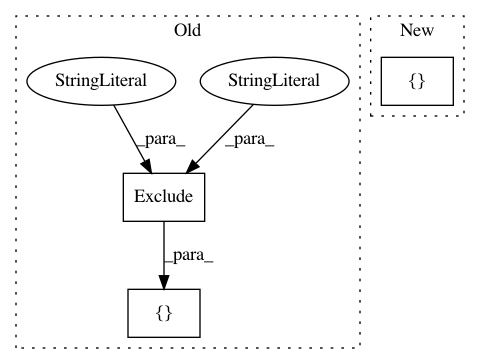

d0ed4a534bcc3cfc8ba1aed61655b2b5a4943ae1,src/python/twitter/pants/targets/storm_binary.py,,,#,20
Before Change
from twitter.pants.targets.jvm_binary import JvmBinary
from twitter.pants.targets.exclude import Exclude
LOGGING_EXCLUDES = [
Exclude(org = "ch.qos.logback"),
Exclude(org = "commons-logging", name = "commons-logging"),
Exclude(org = "log4j"),
Exclude(org = "org.slf4j"),
]
// The storm cluster provides the appropriate versions of these jars.
ON_STORM_CLUSTER_EXCLUDES = [
Exclude(org = "storm", name = "storm"),
Exclude(org = "backtype", name = "jzmq"),
After Change
from twitter.pants.targets.jvm_binary import JvmBinary
from twitter.pants.targets.exclude import Exclude
BLACKLIST_EXCLUDES = [
Exclude(org = "log4j"), //There should only be a single logger implementation per JVM, and that"s logback on storm.
]
// The storm cluster provides the appropriate versions of these jars.
ON_STORM_CLUSTER_EXCLUDES = [
Exclude(org = "storm", name = "storm"),
In pattern: SUPERPATTERN
Frequency: 3
Non-data size: 3
Instances
Project Name: pantsbuild/pants
Commit Name: d0ed4a534bcc3cfc8ba1aed61655b2b5a4943ae1
Time: 2014-02-27
Author: jackson@twitter.com
File Name: src/python/twitter/pants/targets/storm_binary.py
Class Name:
Method Name:
Project Name: pantsbuild/pants
Commit Name: 974772f89b4d601083bd98fecd020726490ffab6
Time: 2016-03-02
Author: stuhood@gmail.com
File Name: tests/python/pants_test/backend/jvm/targets/test_jar_dependency.py
Class Name: JarDependencyTest
Method Name: test_jar_dependency_excludes_change_hash
Project Name: pantsbuild/pants
Commit Name: 325771dfed5afff58adcea20c8ed23b70e6a1261
Time: 2017-04-24
Author: stuhood@twitter.com
File Name: src/python/pants/backend/jvm/tasks/jvm_compile/zinc/zinc_compile.py
Class Name: BaseZincCompile
Method Name: register_options